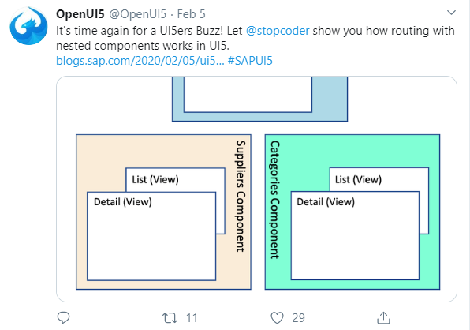
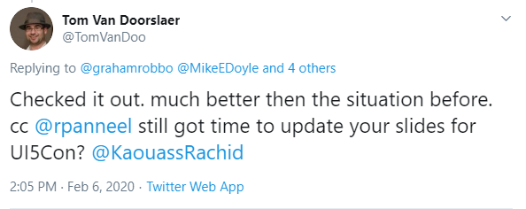

Lessons learned about working with
Components and Composite Controls
Robin Panneels, Canguru Solutions
February 14, 2020
February 14, 2020
Last week this happened


Reusable Components
Deep Dive
Robin Panneels, Canguru Solutions
February 14, 2020
February 14, 2020
Who already implemented reusable Components?
What is a Component?
Every UI5 application is a Component!
Because we always extend:
or
UI5 applications can be reused in another application
In this case we have a rootView
But we can also expose a Control
See metadata of sap.ui.core.UIComponent:
...
metadata : {
"abstract": true,
rootView : null, // the rootView to open
publicMethods: [ "render" ],
aggregations: {
/**
* The root control of the UIComponent.
*
* The root control should be created inside the function
* {@link sap.ui.core.UIComponent#createContent}.
*/
"rootControl": {
type: "sap.ui.core.Control",
multiple: false,
visibility: "hidden"
}
},
...
}
Use-cases for reusable Components
- Search helps/Value Help Dialogs
- Information Dialog views
- Lists and Tables
More information can be found on Nabi Zamani's website
Components Vs Controls
Components can create models and work with Back-ends
Controls can't
Reusable Component example: AttachmentManager
Initial goals:
- Wrapper for UploadCollection
- UploadSet implementation
- Standardize working with attachments and links
You can also go to far with implementing reusable components
You can propagate the models from the application to the
ComponentContainer
So the risk exists that you make a Reusable Component app
dependent...

Routing in Nested Components in 1.60
Routing in Nested Components from 1.72
Thank you!